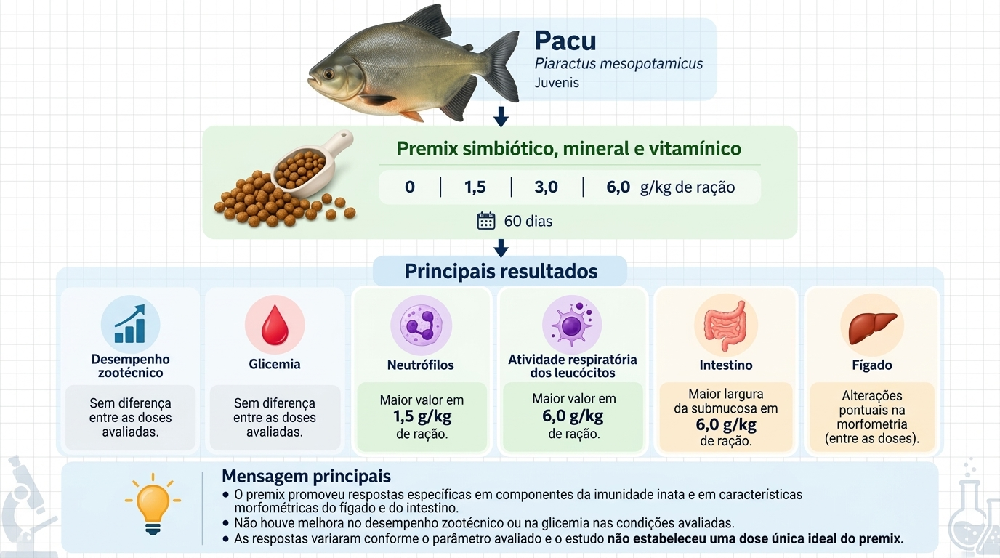

Tecnologias para uma piscicultura sustentável: divulgação de probióticos, prebióticos e simbióticos para produtores, estudantes e profissionais da aquicultura
Tabelas de Resultados
Deslize para o lado para ver as tabelas e referências de estudos.

Referências Bibliográficas
ACUNHA, R. M. G. et al. O uso de imunomoduladores na alimentação de peixes: uma revisão. Research, Society and Development, 2023.
CORNÉLIO, J. P. S.; CORNÉLIO, K. C. S. A influência do uso de probióticos no desempenho e saúde de peixes nativos. Revista Ibero-Americana, 2023.
SOUZA, F. R. et al. Aplicação de micro-organismos e algas como probióticos, prebióticos e simbióticos. In: OPEN SCIENCE RESEARCH IV, 2022.
VIEIRA, B. B.; PEREIRA, E. L. Potencial dos probióticos para o uso na aquicultura. Revista da Universidade Vale do Rio Verde, 2016.